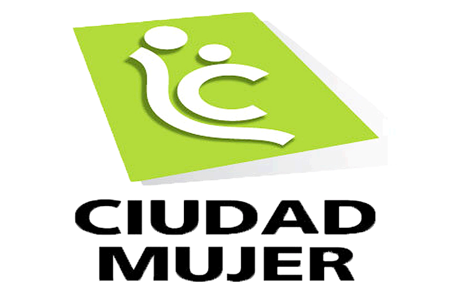

Mejorando las condiciones de vida de las mujeres salvadoreñas.

Ciudad Mujer concentra, dentro de una misma infraestructura, a 18 instituciones del Estado, quienes trabajan de forma articulada y operan con funcionarias mujeres que han sido formadas en género y en el enfoque de derechos humanos. Actualmente funcionan seis centros de Ciudad Mujer distribuidos en las tres zonas más importantes del país, cuya infraestructura es plenamente accesible a mujeres con discapacidad y adultas mayores.
Con el apoyo de: